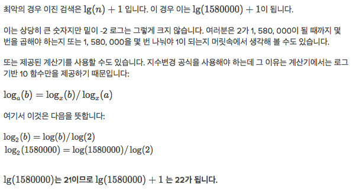

알고리즘 스터디[1] - 이진 탐색
문제: 이진 검색 구현
이진 검색을 실행하도록 doSearch’ 함수를 완성하는 아래의 의사코드를 확인하세요.(이 의사코드는 전에 있던 내용에서도 보았습니다.)
- min = 0 이고 max = n-1 입니다. 2.max < min, 이라면 멈춥니다. 타겟이 배열에 존재하지 않습니다. -1을 반환합니다.
- ‘guess’를 ‘max’와 ‘min’의 평균으로 계산하고 (정수가 될 수 있도록) 내림합니다.
- 배열[guess]가 타겟과 같다면 멈춥니다. 찾았습니다! guess를 반환합니다.
- 만약 추측이 너무 낮았다면, 즉 배열[guess] < 타켓이라면, min = guess + 1로 바꿉니다.
- 그렇지 않다면 추측이 너무 높습니다. max = guess - 1로 바꿉니다.
- 2단계로 돌아갑니다.
다 구현했다면 Program.assertEqual()’ 을 주석에서 빼서 테스트를 통과하는지 확인합니다.
1. 이진 검색 JS 코드로 구현하기 (while문 이용)
1-1. 잘못 구현한 내용
/* Returns either the index of the location in the array,
or -1 if the array did not contain the targetValue */
var doSearch = function(array, targetValue) {
var min = 0;
var max = array.length - 1;
var guess;
// 몇 번 순회했는지 알려주는 변수 count 값
var count = 0;
while(min <= max) {
// 1. 중간 추정값 guess를 구하고 정수로 만든다.
// 1-1. max+min인 이유?
// 1-2. Math.floor(), Math.round() - 반내림, 반올림
guess = Math.floor((max+min)/2);
// 각 단계에서 guess 값 출력하기
println(guess);
// 2. 중간 추정값이 타겟 값과 동일하다면 바로 그 index 값을 리턴한다.
if(array[guess] === targetValue) {
// 각 단계에서 guess 값 출력하기
println(guess);
return guess;
// 3. 만약 추정값이 타겟 값보다 작다면 최소 추정값(index)을 증가시킨다.
} else if(array[guess] < targetValue) {
min = guess+1;
// 4. 만약 추정값이 타겟 값보다 크다면 최대 추정값(index)을 감소시킨다.
} else {
max = guess-1;
}
println(count);
}
return -1;
};
var primes = [2, 3, 5, 7, 11, 13, 17, 19, 23, 29, 31, 37,
41, 43, 47, 53, 59, 61, 67, 71, 73, 79, 83, 89, 97];
var result = doSearch(primes, 73);
println("Found prime at index " + result);
Program.assertEqual(doSearch(primes, 73), 20);
1-2. 얼마나 걸리죠?
검색에 걸리는 시간을 보다 효과적으로 시각화하려면 결과를 찾기까지 소요되는 총 유추의 수를 표시하는 println() 문을 추가하세요. 이렇게 하면 목표를 찾을 때 함수에서 총 유추의 수만 표시됩니다. 매 반복문마다 유추의 수를 출력해서는 안 됩니다.
참고: 목표값 ‘41’에 대한 ‘primes’ 배열 내 이진 검색에는 한 개의 유추만이 필요합니다.
- count: 전체 유추 횟수는 맞았을 경우가 마지막이므로
array[guess] === targetValue일 때 출력한다. - guess: 알고리즘의 결과 값
/* Returns either the index of the location in the array,
or -1 if the array did not contain the targetValue */
var doSearch = function(array, targetValue) {
var min = 0;
var max = array.length - 1;
var guess;
var count = 0;
while(min <= max) {
guess = Math.floor((max+min)/2);
count++;
println(guess);
if(array[guess] === targetValue) {
println(count);
return guess;
} else if(array[guess] < targetValue) {
min = guess+1;
} else {
max = guess-1;
}
}
return -1;
};
var primes = [2, 3, 5, 7, 11, 13, 17, 19, 23, 29, 31, 37,
41, 43, 47, 53, 59, 61, 67, 71, 73, 79, 83, 89, 97];
var result = doSearch(primes, 73);
println("Found prime at index " + result);
Program.assertEqual(doSearch(primes, 73), 20);
퀴즈
2014년 "Catalogue of Life"에는 약 1580000종의 이름이 등재되어 있습니다. 이 이름들을 배열 안에서 정렬한다면, 이진 검색을 활용하여 특정한 종의 이름을 찾을 때까지는 최악의 경우 몇 개의 이름을 확인해야 할까요?
- 답
- 최대 22개의 이름을 확인해야 한다.
풀이 : 
참고
| [참고 | 이진 탐색과 시간 복잡도](http://jwoop.tistory.com/9) |
| [참고 | 분할 정복 알고리즘 - wiki](https://ko.wikipedia.org/wiki/%EB%B6%84%ED%95%A0%EC%A0%95%EB%B3%B5%EC%95%8C%EA%B3%A0%EB%A6%AC%EC%A6%98) |
- 분할정복(divide and conquer)
- 문제의 범위를 더 작은 단위로 쪼개어 해결한 뒤 각각의 중간 결과를 합하여 최종 결과를 도출하는 문제풀이 기법이다. 대표적인 사례는 머지소트와 퀵소트이다.
문제를 해결하는 함수 f(n)를
{ f(1) = c , f(n) = C + 2f(n/2) }
의 형태로 변형할 수 있을 때 적용할 수 있다. 그냥 말로는 쉬운데 실제로 적용 포인트를 찾는게 생각보다 어렵다.